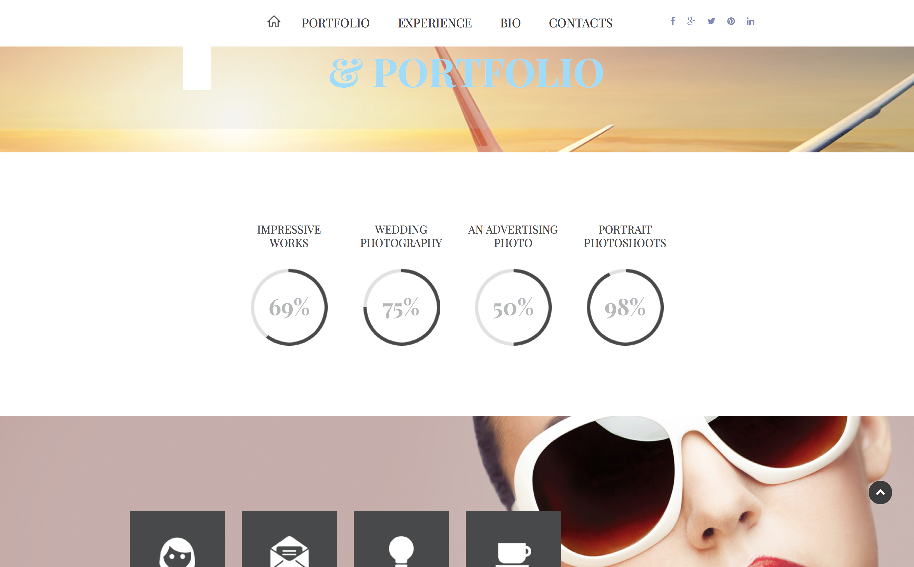
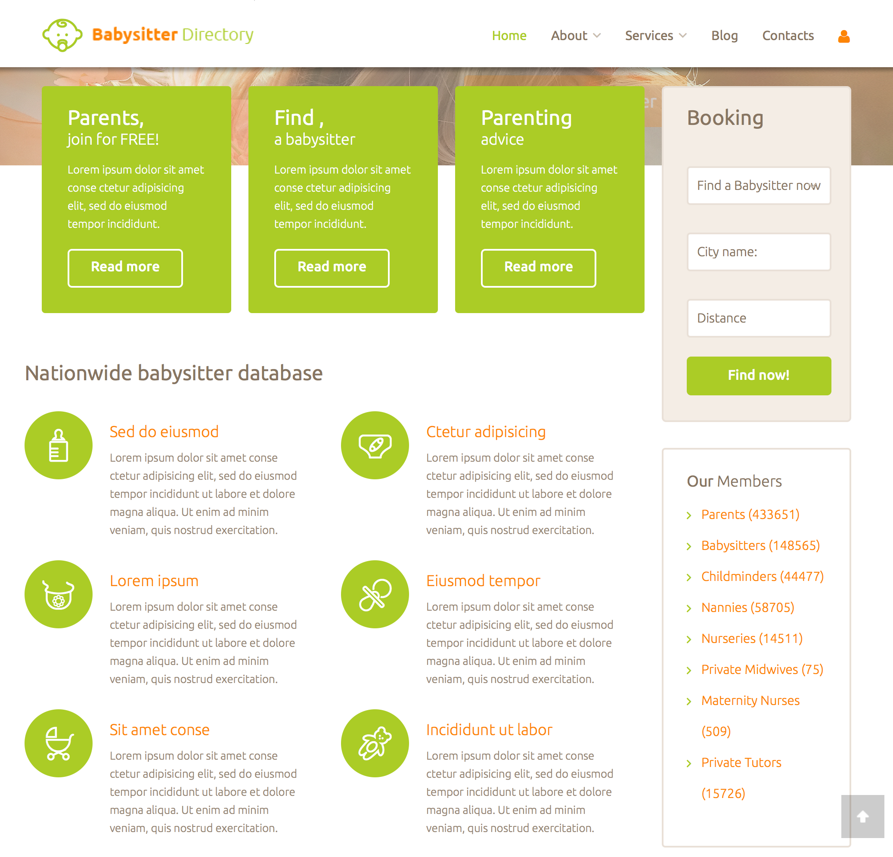
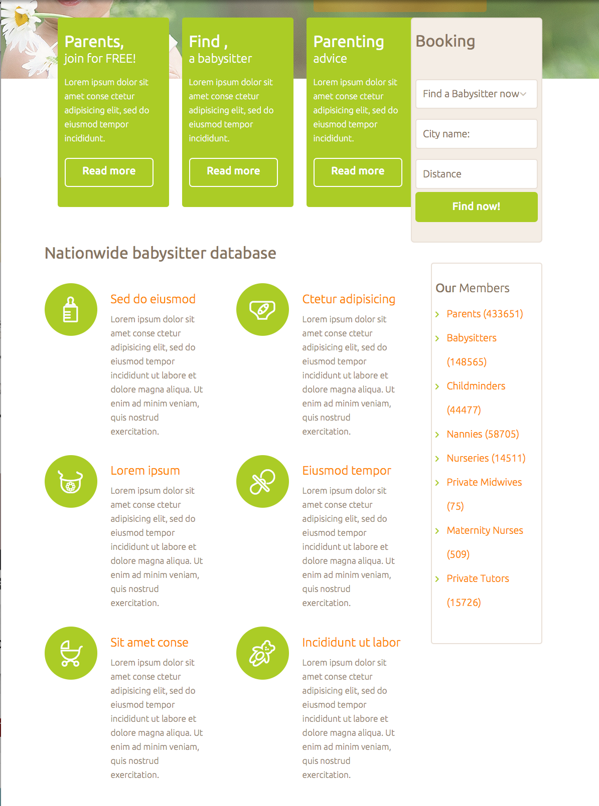
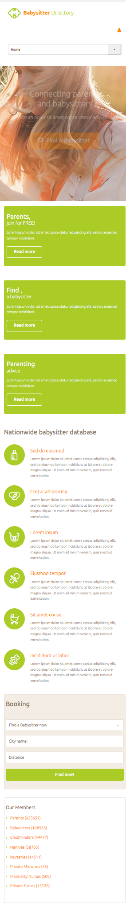
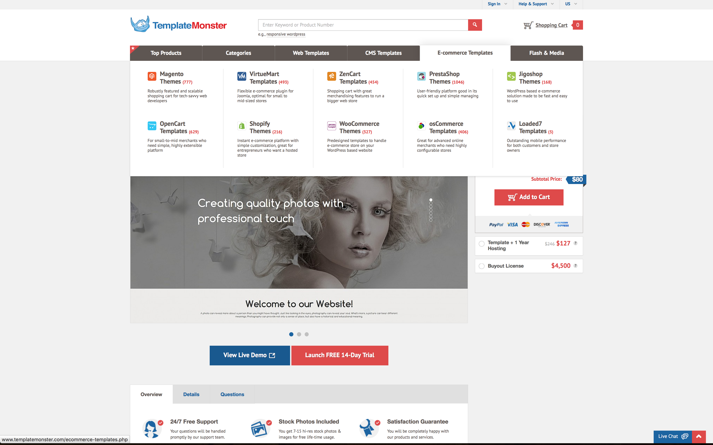

I am a paid front end development intern for a small startup in Henderson, NV, which is near Las Vegas kind of like Hollywood is near L.A., except... it isn't like Hollywood or L.A. I started out becoming a graphic designer, but decided that I really liked developing websites so I kind of just turned the graphic design towards development and now do my best to create good looking web design.
Website Components
Static Background scrolling with changing images
What I hope to practice/learn?
I'd like to learn a good way of using images in interesting ways to make web pages more engaging for the user. I have not used HTML5 tags for layouts more complex than this one, so I think it will be good to learn how to use them in this way.
How does this relate to what have/will have learned in this class?
I haven't really done much with dynamic backgrounds in this way, so I'm hopefuly for this one. I'm trying to think of how I might do this without having looked at any code, and I'm probably overthinking it. We'll see.
Radial Graphs

What I hope to practice/learn?
This is a great way to show statistics, percentage, and progress to users, and a technique that is becoming more popular with the increased use of CSS3 and HTML5. I'm looking forward to enhancing CSS and HTML skills, as well as some JavaScript with this component.
How does this relate to what have/will have learned in this class?
Flash used to be the standard for creating components like this, that can animate and have varied shapes based upon dynamic data, but it's now possible with HTML5 and CSS3, usually with the help of some JS, so I'm looking forward to creating this in a way that is dependent on the values from the HTML, or possibly some JSON.
Responsive Column Grid



What I hope to practice/learn?
I'll be practicing uses @media selectors, as well as utilizing HTML5 tags in the correct way.
How does this relate to what have/will have learned in this class?
I've learned how to create responsive, mobile-first layouts through past courses, so I'm hoping to put some of that the test here.
Dropdown List with grid and child elements

What I hope to practice/learn?
I've created navigations and dropdown lists before, but never an extensive dropdown like this one. I'm thinking I'll be using either floating or inline-block styles for this.
How does this relate to what have/will have learned in this class?
I'm excited to create some interactive elements, and this nav and dropdown list will be a fun use of interactive CSS.
Fading Slideshow featured
What I hope to practice/learn?
This is a bit heavier on the JS side, but making the correct use of HTML and CSS will be important as well. I'll be practicing with all three to create animated slides.
How does this relate to what have/will have learned in this class?
CSS3 can be used with JavaScript to create animations.
How might I build this?
Logo <img> with <p> tags for the text
<ul> for the nav
<section> for each slide
<article> for the slide content
<h2> and <p> for the header and paragraph in the slide